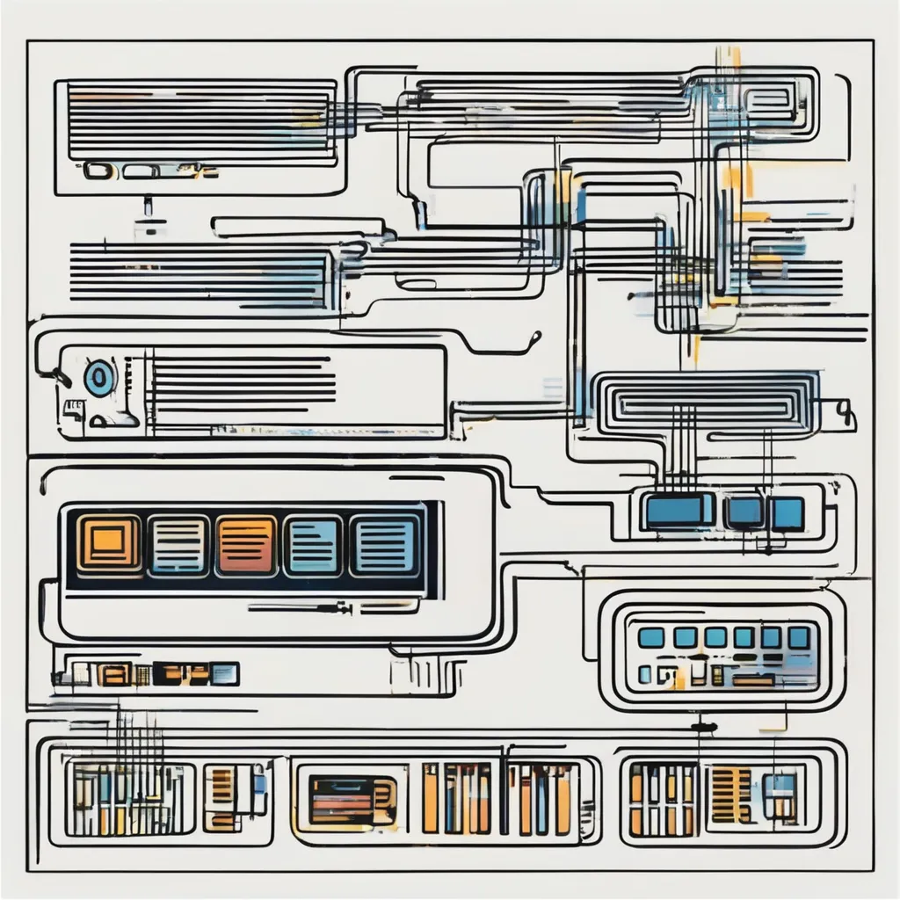

1. Vilken roll spelar DNS servern när en användare navigerar till en webbsida.
Svar: "DNS" vilket står för Domain Name System är som en telefonnummers bok, när man söker upp en webbsida så kommer DNS att lösa namnet till ett nummer vilket är ett ip-adress som motsvarar den sidan som man sökt på, man kan till och med bara söka upp sidans ip adress så kommer man till sidan
2. Beskriv kortfattat de steg som klienten och servern tillsammans går igenom när en webbsida bestående av filerna index.html, style.css och example.jpg öppnas.
- Svar:
- Steg 1: Webbläsaren skickar signaler till DNS server för att få ett unikt ip-adress till servern.
- Steg 2: Webbläsaren svarar tillbaka och ger oss en IP-adress för att komma åt servern via http eller https som man ser längst upp i sidan.
- Steg 3: Webbläsaren skickar en förfrågan till servern för att kunna hämta index.html.
- Steg 4: När dokumentet ser att man har kopplat och skrivit en länk till style.css så skickar den en ny förfrågan till servern för att hämta css-filen.
- Steg 5: Servern svarar tillbaka med innehållet css, då är html och css kopplat tillsammans.
- Steg 6: Samma gäller för example.jpg, klienten skickar en ny förfråga till servern från html för att hämta bilden så att den syns när man kommer åt sidan.
3.Beskriv de delar som följande url består av: https://medieteknik.lnu.se:443/wt1/index.html#intro-ta upp alla delar som åtskiljs av /, : och #.
- https-Det står för “Hyper Transfer Protocol Secure”, det är protokoll som används för kommunicera över webben och är en säkrare version jämfört med http. Https skyddar sidan så att ingen annan kan komma åt privata saker som personen skriver.
- medieteknik.lnu.se-Namnet som sidan döptes till.
- 443-Portnummer som ansluter till servern, 443 är en standard portnummer för https.
- Wt1-Sökvägen till en specifik mapp/fil till servern.
- Index.html-Filnamnet/typen på webbsidan.
- #intro-Den delen man vill komma åt i sidan, det är mer specifikt vart i sidan.
Bilderna!
